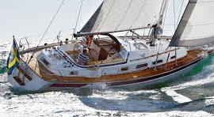
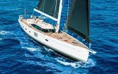

Laser Sailboats
Laser sailboats, often simply called "Lasers," are a popular class
of small, single-handed sailing dinghies known for their
simplicity, performance, and widespread appeal. Designed in 1969
by Bruce Kirby, the Laser is characterized by its lightweight
design, easy-to-rig sail, and a strict one-design principle that
ensures all boats are virtually identical. This allows sailors to
compete on skill alone, making it a favorite in competitive
sailing, including the Olympics. Despite its small size, the Laser
is highly responsive and capable of exhilarating speeds, offering
both beginners and seasoned sailors a challenging and rewarding
experience on the water.
Dingy Sailboats
Wayfarer sailboats are versatile, durable dinghies renowned for
their stability, spacious design, and suitability for both
cruising and racing. Designed in 1957 by Ian Proctor, the Wayfarer
is a 16-foot boat that comfortably accommodates up to six people,
making it ideal for family outings or group sailing adventures.
Its robust construction and seaworthiness allow it to handle
various conditions, from calm inland waters to more challenging
coastal environments. The Wayfarer’s adaptability has made it a
favorite for training, cruising, and competitive sailing, offering
a perfect balance between ease of use and performance.
30 foot Sailboats
A 30-foot yacht is a versatile and accessible choice for sailors
seeking a balance between size, comfort, and ease of handling.
These yachts are compact enough to be easily managed by a small
crew or even single-handed, yet spacious enough to offer
comfortable accommodations for weekend cruising or short coastal
trips. Typically featuring a small cabin with sleeping berths, a
galley, and a bathroom, a 30-foot yacht provides the essentials
for enjoying life on the water. Ideal for both novice sailors and
those looking for a manageable vessel, these yachts offer a blend
of performance and practicality, making them popular for both
recreational sailing and casual racing.
40 foot Sailboats

A 40-foot sailboat represents a perfect balance between size,
comfort, and performance, making it a popular choice for both
serious cruisers and liveaboard sailors. These mid-sized yachts
offer ample space for extended voyages, often featuring multiple
cabins, a well-equipped galley, and comfortable living areas.
Their size allows for greater stability in various sea conditions,
yet they remain manageable enough for a small crew or even
single-handed sailing. With a range of designs available, from
sleek racing models to more luxurious cruisers, 40-foot sailboats
are versatile vessels capable of long-distance sailing, coastal
cruising, and even competitive racing.
60 foot Sailboats

A 60-foot sailboat represents a balance of luxury, performance,
and capability, typically found in both racing and cruising
models. These vessels are large enough to offer spacious
accommodations, often featuring multiple cabins, a well-equipped
galley, and comfortable living areas, making them ideal for
extended voyages or liveaboard lifestyles. At the same time, their
size and design allow them to perform exceptionally well under
sail, whether navigating coastal waters or embarking on
transoceanic passages. For experienced sailors, a 60-foot sailboat
combines the thrill of sailing with the comforts and conveniences
of a home on the water.
Megayacht Sailboats
Megayacht sailboats are the epitome of luxury and sophistication
on the water, combining the elegance of traditional sailing with
the amenities and grandeur of a superyacht. These vessels,
typically over 100 feet in length, offer expansive deck space,
opulent interiors, and state-of-the-art technology, providing an
unparalleled experience for owners and guests. With multiple
levels, lavish staterooms, gourmet kitchens, and often additional
features like spas, cinemas, and tenders, megayacht sailboats are
designed for those seeking both adventure and indulgence. Despite
their size, these yachts are crafted for exceptional sailing
performance, making them capable of long-distance voyages while
maintaining the highest standards of comfort and style.